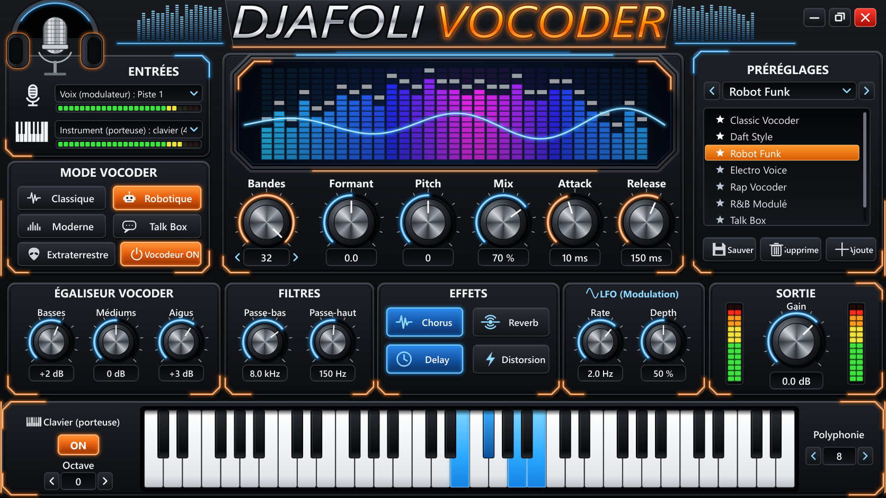
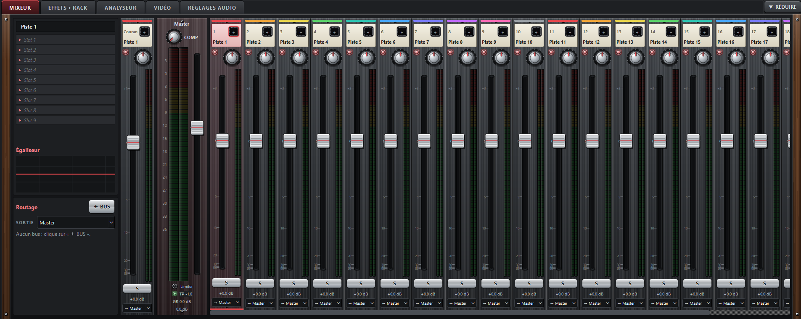
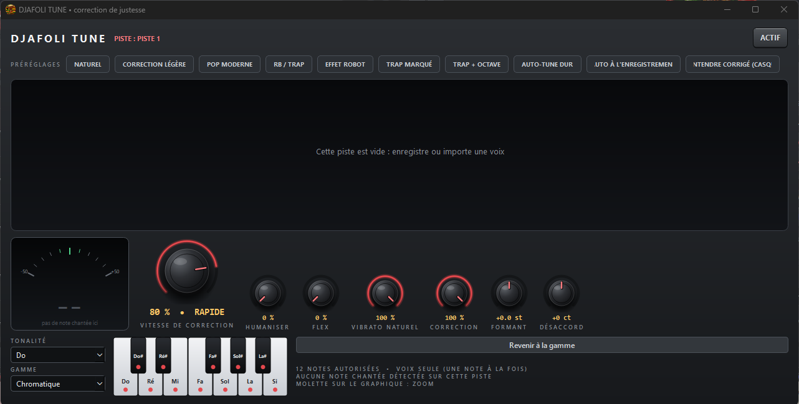
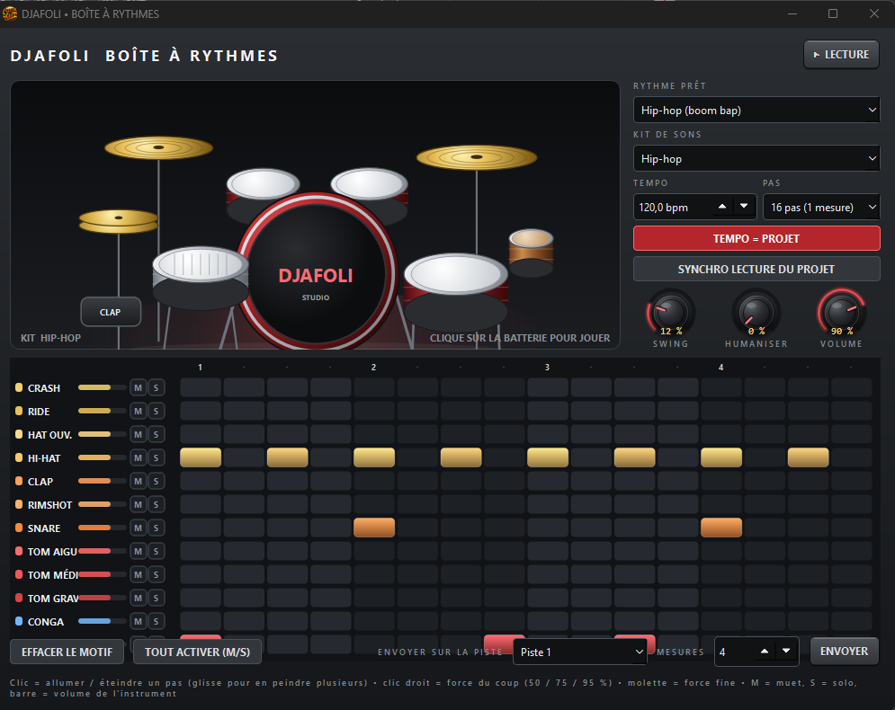

Studio d'enregistrement pour Windows
DJAFOLI STUDIO est fait pour les débutants qui veulent se lancer : enregistre ta voix, corrige-la avec DJAFOLI TUNE, ajoute un rythme, mixe et exporte ton morceau. Des préréglages rap, reggae et chant sont prêts à l'emploi.
Windows 10 et 11 · 3 packs, à partir de 29,99 €

Du micro au fichier final, sans plugin à installer.
Corrige la justesse de ta voix. Du réglage naturel à l'effet robot, avec un graphique qui montre ta voix avant et après.
Transforme ta voix en voix de robot qui chante des notes. 5 modes, préréglages prêts, et un clavier pour jouer les accords.
Des rythmes prêts en rap, reggae, ragga, dancehall et hip-hop. Choisis, règle le tempo, pose-le sur une piste.
Rap, reggae, chant : un clic règle l'égaliseur, le compresseur, l'écho et la réverb de ta piste. Annulable à tout moment.
20 pistes dès l'ouverture, une console de mixage, un égaliseur 10 bandes par piste et un rack de 22 effets intégrés.
WAV, MP3, FLAC, AIFF, OGG, M4A, OPUS et WMA. Chaque fichier est vérifié, et le limiteur évite la saturation.
Branche ton micro, choisis une piste, appuie sur enregistrer.
DJAFOLI TUNE, un préréglage de voix, un rythme : en quelques clics.
Ton morceau en MP3 ou WAV, prêt à partager.
Ce que tu verras en ouvrant DJAFOLI STUDIO.



31 secondes · le logo, le vocodeur, les fonctions et les packs
Un seul fichier à lancer. Tes projets restent dans ton dossier personnel, même si tu réinstalles.
Les avis de tes premiers utilisateurs.
[AVIS CLIENT À AJOUTER : ce que la personne a fait avec DJAFOLI STUDIO]
[Prénom, ville]
[AVIS CLIENT À AJOUTER : ce que la personne a fait avec DJAFOLI STUDIO]
[Prénom, ville]
[AVIS CLIENT À AJOUTER : ce que la personne a fait avec DJAFOLI STUDIO]
[Prénom, ville]
Un seul paiement par pack [À CONFIRMER]. Tu peux commencer petit et passer au pack supérieur plus tard [CONDITIONS À DÉFINIR].
Pack ESSENTIEL
29,99 €
Pour faire tes premiers morceaux.
Recommandé
Pack VOIX
39,99 €
Pour les chanteurs et les rappeurs.
Pack COMPLET
49,99 €
Tout DJAFOLI, sans limite.
Windows 10 et 11 · [LIENS DE PAIEMENT À AJOUTER]
Oui. DJAFOLI STUDIO est pensé pour les débutants : préréglages tout prêts, bulles d'aide sur les boutons, et tout s'annule avec Ctrl+Z.
Non, DJAFOLI STUDIO fonctionne sur Windows 10 et 11.
Non. Les effets (DJAFOLI TUNE, vocodeur, réverb, écho, compresseur… 22 au total) sont intégrés.
Le projet est sauvegardé automatiquement toutes les 2 minutes. Au redémarrage, DJAFOLI STUDIO te propose de le récupérer.
C'est normal pour un nouveau logiciel pas encore signé numériquement : clique sur « Informations complémentaires », puis « Exécuter quand même ».